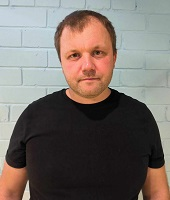

Rain Arendi

Summary
I am a fast learner and dedicated to whatever I do.
I have experience in manufacturing, sales, purchase,
and driving heavy machinery
Education
Secondary Education - Vändra Gymnasium 1992-2004
Work Experience
Wenfom AS
- January 2006 - April 2006 - Auxiliary Worker
- Helping machine operators with their work
- April 2006 - December 2008 - CNC operator
- Working with CNC cutting machine
- December 2008 - July 2011 - production manager assistant
- Helping Production Manager to organise work in the factory
- Creating new blueprints for CNC using CAD
- Replacing any machine operator if needed
- Warehouse Management
- July 2011 - April 2016 - production manager
- Organising work in factory
- Warehouse Management
- Purchase of Raw Material
- Selling Finished Products
- Organising all the transport
- Negotiations with Suppliers and Clients
- Creating new blueprints for CNC using CAD
Wendre AS
- April 2016 - 08.2018 - Shift Manager
- Organising work in my department of factory
- Warehouse Management
- Purchase of Raw Material
- Selling Finished Products
- Organising all the transport
- Negotiations with Suppliers and Clients
- Creating new blueprints for CNC using CAD
Combitrans OÜ
- April 2019 - Present - Truck Driver
- Driving a Truck with dumper or moving floor semi trailer
Skills
- Basic knowledge about production
- Basic knowledge about purchase
- Basic knowledge about sales
- Speaking Estonian(C1) and English(B2)
- Driving License: A, B, BE, C, CE
Educational Training
- Advanced Microsoft Excel 2017
- Introduction to Python Programming 2023 (Udemy)
- Web Development Bootcamp 2023 (Udemy)
Other